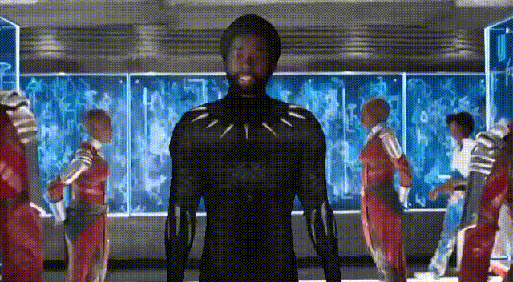

A
WAKANDA
vamos lá
WAKANDA
História
O Pantera Negra é mais um dos super-heróis da Marvel Comics criado pela dupla Stan Lee e Jack Kirby. No entanto, antes de ganhar suas próprias histórias em quadrinhos individuais, começou sua trajetória na revista Fantastic Four #52 (como uma grande parte dos personagens da editora, que apareceram primeiro em alguma edição do Quarteto Fantástico). Durante sua primeira aparição, o Pantera Negra dá uma nave de presente aos membros do Quarteto Fantástico. Além disso, o personagem faz um convite para que o grupo conheça Wakanda (seu reino). Além de apresentar o país onde é rei, o herói revela seu verdadeiro nome: TaChalla. Na época da estreia, os EUA viviam uma disputa tecnológica com a União Soviética, em razão da Guerra Fria. Entretanto, a principal influência para o desenvolvimento do super-herói estava em outro movimento: no mesmo período, negros protagonizavam a luta contra o racismo no país.
Origem do Pantera Negra

Segundo a história canônica do herói nos quadrinhos, o Pantera Negra é natural de Wakanda. O país, criado exclusivamente para as hqs, mistura tradições tribais com tecnologias futuristas. Sobretudo, a principal fonte dessa tecnologia é o metal vibranium, também exclusivo da ficção. No passado, um meteoro caiu na região e promoveu a descoberta do vibranium. O metal é capaz de absorver qualquer vibração, o que lhe concedeu valor extremo. Não é à toa, por exemplo, que o escudo do Capitão América é feito com vibranium. Ele também é responsável pelas ações criminosas de Ulysses Klaw, vilão das histórias do Pantera Negra, que também foi adaptado para os cinemas. Nos quadrinhos, Klaw é responsável por matar o rei TChaka, pai de TChalla. É só nesse momento que o herói assume o trono e o manto de Pantera Negra. Em razão da tentativa de roubo do vibranium, Wakanda acaba se fechando do mundo e guardando o metal para sai. TChalla, no entanto, viaja o mundo para estudar e se tornar cientista.
Importância histórica

As preocupações em transformar heróis em personagens complexos, que retratavam problemas reais dos leitores, já fazia parte da política da Marvel. Os X-Men, por exemplo, lidavam com histórias de opressão para com minorias negras e LGBT, sempre salientando discussões sobre preconceito e intolerância. Nesse contexto, então, o Pantera se tornou mais um importante símbolo da representatividade. Nesse momento, o roteirista Don McGregor ressignificou a revista Jungle Action. Seu principal feito foi colocar o Pantera Negra como protagonista da publicação. Antes disso, a revista focava em personagens brancos explorando terras africanas e ameaçando (ou tentando salvar) negros. Além disso, com a transformação, não só o Pantera ganhou status de protagonista, como todo o elenco que o acompanhava era negro. Em uma das histórias, TChalla chegou a enfrentar um inimigo histórico: a Ku Klux Klan. Por fim, além de TChalla, outros personagens importantes ganharam destaque na revista, como Luke Cage, Blade e Tempestade.
Evolução

Primeiramente, ao longo da história, o Pantera Negra participou de aventuras ao lado de Demolidor, Capitão América, Vingadores e vários outros. A partir de 1998, o personagem teve um de seus ciclos de publicação mais elogiados da história. Na época, o editor do personagem era Christopher Priest, primeiro editor negro de quadrinhos. Depois de mais de 30 anos de publicação, foi a primeira vez que TChalla foi realmente tratado com um rei. Não só isso, como também foi a primeira vez em que realmente era tratado como protagonista de respeito. Além disso, Priest também foi responsável por criar as Dora Milaje. As personagens eram amazonas que faziam parte das forças especiais de Wakanda. Além disso, as capacidades tecnológicas, culturais e até mesmo políticas foram mais desenvolvidas. Ao mesmo tempo, o Pantera Negra se desenvolvia em suas múltiplas funções: cientista, diplomata, rei e super-herói. A partir de 2016, o Pantera foi assumido por Ta-Nehisi Coates. O escritor cresceu num ambiente com livros escritos por negros, sobre negros e para negros. Isso porque seus pais queriam educar os filhos a partir de uma cultura negra.Dessa maneira, Coates conseguiu aprofundar ainda mais no lado étnico das histórias do Pantera. Foram as questões raciais e políticas levantadas pelo escritor que inspiraram a diretor Ryan Coogler no cinema
Site de referência